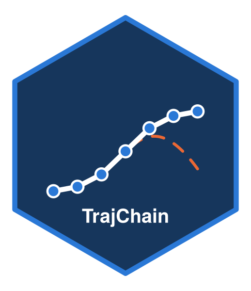

Plot a trajchain fit or its bootstrap confidence bands
Source:R/plot.R
plot-trajchain.Rdplot() methods for trajchain() and trajchain_boot() results. They call
plot_trajectories() for a single group; bootstrap results add pointwise
confidence bands.
Arguments
- x
A
"trajchain"or"trajchain_boot"object.- which
Panels to draw, in order: any of
"shape"(shape function),"mean"(unconditional mean),"nw"(simple kernel smoothing of the observed markers),"bias"(birth-cohort-survivor bias) and"mu"(\(\hat\mu_{Z^0}\)).- mu_method
"baseline"or"pooled"; defaults to the estimator chosen when fitting the first object.- ...
Further arguments passed to
plot_trajectories().- ci
Type of band: pointwise
"percentile"intervals (default) or"normal"intervals, estimate \(\pm z_{1-\alpha/2}\) times the bootstrap standard error.